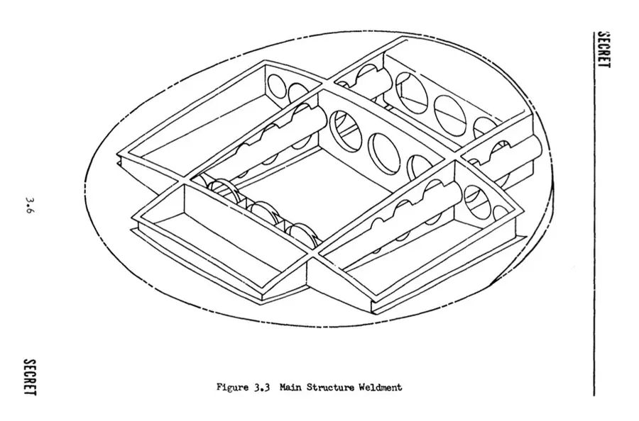
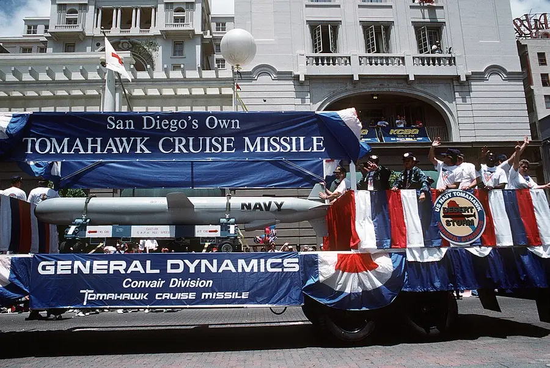

대표 로고대표 브랜드 마크
대표 로고대표 브랜드 마크제너럴 다이내믹스 General Dynamics
제너럴 다이내믹스(General Dynamics)는 미국의 산업·기술 기업으로, 군사 장비와 Gulfstream 비즈니스 제트기를 생산하고 정보기술 서비스를 제공하는 기업이다.
최종 업데이트
제너럴 다이내믹스는 어떤 브랜드인가
핵잠수함, 주력전차, 장갑전투차량을 비롯한 다양한 첨단 군사 장비를 개발하고 생산한다. 민간 항공 분야에서는 Gulfstream 비즈니스 제트기를 제조하며 정보기술 서비스도 제공한다.
미국 연방정부 상위 100개 계약업체 가운데 3위이며, 연방정부 전체 계약 지출의 3% 이상을 받는다. Fortune 100에서는 96위, Forbes Global 2000에서는 242위에 올라 있다.
2024년 매출은 미국 연방정부 69%, 미국 상업 고객 14%, 미국 외 정부 고객 10%, 미국 외 상업 고객 7%로 구성한다.
제너럴 다이내믹스는 어떻게 시작되고 성장했나
1952년 Electric Boat와 Canadair의 합병으로 형성된 기업이며, 창업자는 John Philip Holland이다. Isaac Leopold Rice는 1899년 John Philip Holland에게서 Holland Torpedo Boat Company를 인수했고, 회사명을 Electric Boat Company로 변경했다.
Electric Boat는 1900년 미국 해군이 구매한 USS Holland를 설계하고 건조했으며 이후 영국, 일본, 러시아에도 잠수함을 판매했다. 제2차 세계대전에는 잠수함 74척과 PT 보트 398척을 생산했으나 종전 뒤 인력을 13,000명에서 4,000명으로 감축했다.
John Jay Hopkins는 사업 다각화를 위해 1946년 Canadair를 $10 million에 인수했고, 두 회사는 1952년 합병했다.
제너럴 다이내믹스의 브랜드 아이덴티티는 무엇인가
핵잠수함과 전차 같은 군사 장비, Gulfstream 비즈니스 제트기, 정보기술 서비스를 한 기업 안에서 운영하는 사업 구성이 구별점이다.
제너럴 다이내믹스의 대표 제품과 서비스는 무엇인가
군사 부문에서는 핵잠수함, 주력전차, 장갑전투차량을 비롯한 첨단 장비를 개발하고 생산한다. 잠수함 사업은 Electric Boat의 설계·건조 역량을 계승하며, 과거에는 Holland급과 Plunger급 잠수함 및 C급 잠수함 설계도 수행했다.
민간 항공 부문에서는 Gulfstream 브랜드의 비즈니스 제트기를 제조한다. 정보기술 부문에서는 정부와 다른 고객을 대상으로 관련 서비스를 제공하며, 군용 조선·지상 전투 장비·민간 항공기·정보기술이 주요 사업 구성을 이룬다.
제너럴 다이내믹스는 지금 어떤 상태인가
2024년 매출의 69%를 미국 연방정부에서 얻으며 미국 상업 고객의 비중은 14%이다. 미국 외 정부 고객과 상업 고객의 매출 비중은 각각 10%와 7%이다.
미국 연방정부 계약업체 가운데 3위 규모이며 연방정부 전체 계약 지출의 3% 이상을 받는 구조이다.
제너럴 다이내믹스 로고는 어떻게 변해왔나
대표 로고대표 브랜드 마크사진으로 보는 제너럴 다이내믹스의 역사


자주 묻는 질문
제너럴 다이내믹스는 어느 나라 브랜드인가요?
제너럴 다이내믹스는 미국의 에너지·산업재 브랜드입니다.
제너럴 다이내믹스는 언제 설립되었나요?
제너럴 다이내믹스는 1952년 설립되었습니다.
제너럴 다이내믹스의 브랜드 아이덴티티는 무엇인가요?
핵잠수함과 전차 같은 군사 장비, Gulfstream 비즈니스 제트기, 정보기술 서비스를 한 기업 안에서 운영하는 사업 구성이 구별점이다.
제너럴 다이내믹스의 대표 제품은 무엇인가요?
군사 부문에서는 핵잠수함, 주력전차, 장갑전투차량을 비롯한 첨단 장비를 개발하고 생산한다.
제너럴 다이내믹스는 현재 어떤 상태인가요?
2024년 매출의 69%를 미국 연방정부에서 얻으며 미국 상업 고객의 비중은 14%이다.
제너럴 다이내믹스의 창업자는 누구인가요?
제너럴 다이내믹스의 창업자는 John Philip Holland입니다(위키데이터 기준).
제너럴 다이내믹스의 본사는 어디에 있나요?
제너럴 다이내믹스의 본사는 폴스처치에 있습니다(위키데이터 기준).
출처와 검증
제너럴 다이내믹스 관련 참고: 공식 웹사이트 · 위키데이터 Q502940 · 한국어 위키백과 · 영어 위키백과. 브랜드명은 한글과 원어를 함께 표기하되 데이터에 없는 표기는 만들지 않습니다. 기원 국가·설립연도는 검수된 정의문에서 확인된 값을 우선하고, 없을 때만 공식 웹사이트 URL이 일치하는 위키데이터 개체의 값을 씁니다. 탄생일의 월·일은 위키데이터, 위키백과 정보상자, 본문 가운데 같은 연월로 확인되는 값만 싣고, 출처끼리 다르면 싣지 않습니다. 웹 첫 보관은 인터넷 아카이브가 공식 사이트 첫 화면을 처음 보관한 날로, 사이트 개설일과 다를 수 있습니다. 연 매출은 미국 증권거래위원회(SEC)에 제출된 연차 보고서(10-K)의 XBRL 값이며 달러 금액을 반올림했습니다. 위키데이터 값은 2026-09-12 기준입니다.